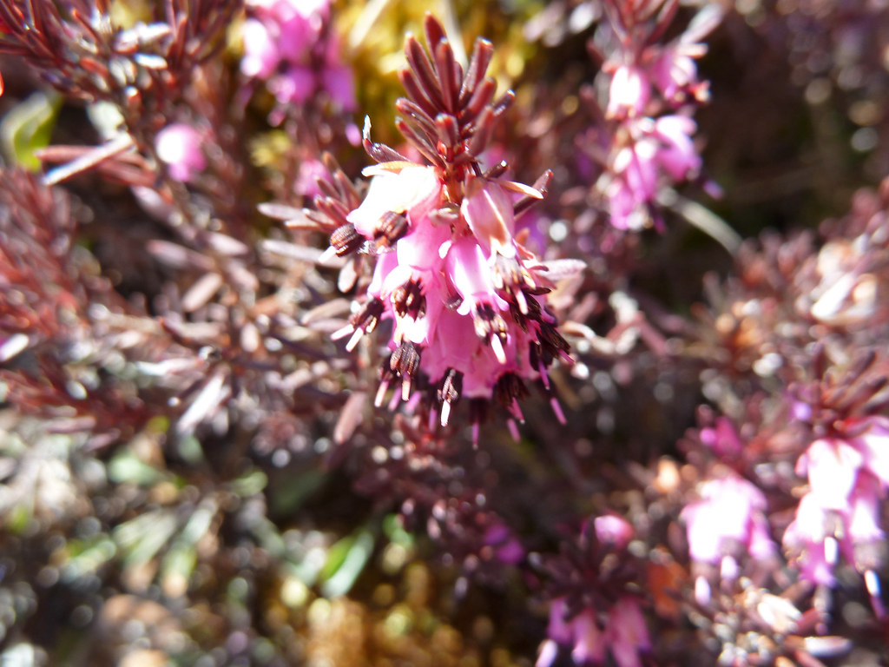

Voice
お客様の声

写真はイメージです(フリー素材を使用)。実店舗の様子とは異なります。
以下は、来店シーンを想定して作成したイメージ例としてのご紹介です。実際のお客様の声ではなく、現在準備中です。あらかじめご了承ください。
白髪が気になり始めてからお願いしていますが、顔まわりの色味まで丁寧に相談しながら決めてもらえるので、毎回安心してお任せできます。仕上がりも自然で、周りから「明るくなったね」と言われることが増えました。
くせ毛で朝のセットにいつも時間がかかっていたのですが、施術後はまとまりが驚くほど良くなり、スタイリングの時間がぐっと短くなりました。髪の傷みも最小限に抑えてもらえた印象です。
髪型の希望をうまく言葉にできなかったのですが、普段の髪の扱い方や雰囲気を丁寧にヒアリングしてもらい、自分では思いつかなかった仕上がりに大満足でした。トリートメント後の手触りも柔らかくなりました。
実際にご来店されたお客様の声は、今後Instagramやレビューを通じてご紹介していく予定です。